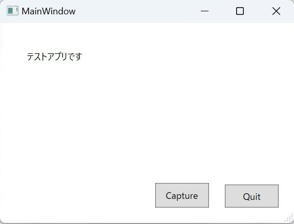

WPFで画面要素のスクリーンキャプチャーを取得する方法について記載します。
WPF アプリケーションでアプリ画面をキャプチャーする方法について記載します。
サンプルとして、画面上の［Capture］ボタンをクリックすることでクリップボードへ画面全体の画像を保存するプログラムを作成します。
| コンパイラ : | Visual Studio 2022 pro., | Version 17.5.5 |
| プラットフォーム： | .NET Framework 4.8.1 | |
| OS : | Windows11 home, | 22H2 |
[図： 作成するプログラム画面]

[プログラムソース "MainWindow.xaml"]
<Window x:Name="main_window" x:Class="ScreenCapture_01.MainWindow"
xmlns="http://schemas.microsoft.com/winfx/2006/xaml/presentation"
xmlns:x="http://schemas.microsoft.com/winfx/2006/xaml"
xmlns:d="http://schemas.microsoft.com/expression/blend/2008"
xmlns:mc="http://schemas.openxmlformats.org/markup-compatibility/2006"
xmlns:local="clr-namespace:ScreenCapture_01"
mc:Ignorable="d"
Title="MainWindow" Height="300" Width="400" WindowStyle="ThreeDBorderWindow" ResizeMode="CanResizeWithGrip">
<Grid>
<Label Content="テストアプリです" HorizontalAlignment="Left" Margin="30,30,0,0" VerticalAlignment="Top" Width="122"/>
<Button x:Name="btnQuit" Content="Quit" Margin="0,0,20,20" VerticalAlignment="Bottom" HorizontalAlignment="Right" Height="30" Width="70" Click="Quit_Click"/>
<Button x:Name="btnCapture" Content="Capture" Margin="0,0,111,20" HorizontalAlignment="Right" VerticalAlignment="Bottom" Height="32" Width="70" Click="Capture_Click"/>
</Grid>
</Window>
[プログラムソース "MainWindow.xaml.cs"]
using System.Windows;
using System.Windows.Media;
using System.Windows.Media.Imaging;
namespace ScreenCapture_01
{
public partial class MainWindow : Window
{
public MainWindow()
{
InitializeComponent();
}
private void Quit_Click(object sender, RoutedEventArgs e)
{
Close();
}
private void Capture_Click(object sender, RoutedEventArgs e)
{
var visual = main_window;
var bounds = VisualTreeHelper.GetDescendantBounds(visual);
var bitmap = new RenderTargetBitmap(
(int)bounds.Width,
(int)bounds.Height,
96.0,
96.0,
PixelFormats.Pbgra32);
var dv = new DrawingVisual();
using (var dc = dv.RenderOpen())
{
var vb = new VisualBrush(visual);
dc.DrawRectangle(vb, null, bounds);
}
bitmap.Render(dv);
bitmap.Freeze();
Clipboard.SetImage(bitmap);
}
}
}
ペイントへ張り付けてキャプチャーした結果を確認します。下図の通り意図通りに画面キャプチャーできました。
タイトルバーの部分は画面キャプチャーされないんだ、というところだけ期待とギャップがありましたが、まぁOKでしょう。
本ページの情報は、特記無い限り下記 MIT ライセンスで提供されます。
| 2023-05-11 | - | 新規作成 |